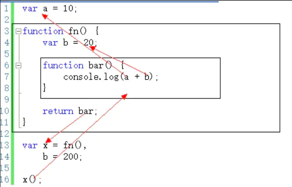

闲来无事，随便写写……
面试总结
前言
总结一下面试遇到的问题，为了方便自己查阅，也希望对小伙伴们有所帮助！
一 HTML
- HTML 语义化就是让页面内容结构化，它有如下优点
- 易于用户阅读，样式丢失的时候能让页面呈现清晰的结构。
- 有利于 SEO，搜索引擎根据标签来确定上下文和各个关键字的权重。
- 方便其他设备解析，如盲人阅读器根据语义渲染网页
- 有利于开发和维护，语义化更具可读性，代码更好维护，与 CSS3 关系更和谐
如：
<header>代表头部
<nav>代表超链接区域
<main>定义文档主要内容
<article>可以表示文章、博客等内容
<aside>通常表示侧边栏或嵌入内容
<footer>代表尾部- HTML5 新标签
有<header>、<footer>、<aside>、<nav>、<video>、<audio>、<canvas>等...
二 CSS
盒子模型
盒模型分为标准盒模型和怪异盒模型(IE 模型)- 标准盒模型 :在标准的盒子模型中，width 指 content 部分的宽度
- IE 盒模型: 在 IE 盒子模型中，width 表示 content+padding+border 这三个部分的宽度
rem 与 em 的区别
rem 是根据根的 font-size 变化，而 em 是根据父级的 font-size 变化
CSS 选择器
通配符：*
ID 选择器：#ID
类选择器：.class
元素选择器：p、a 等
后代选择器：p span、div a 等
伪类选择器：a:hover 等
属性选择器：input[type=”text”] 等权重 !important -> 行内样式 -> #id -> .class -> 元素和伪元素 -> * -> 继承 -> 默认
CSS 新特性
transition：过渡
transform：旋转、缩放、移动或者倾斜
animation：动画
gradient：渐变
shadow：阴影
border-radius：圆角css 命名长短 优缺点
性能分为下载性能(速度)和渲染性能，大家认为：
- 下载性能可能是短命名略胜一筹，因为文件会稍小些；
- 渲染性能则是长命名好些，因为 CSS 中通常短命名我们用类似.box .hd {}定义样式，而长命名直接是.box-hd {}，pagespeed 认为选择器长度会影响渲染性能。
(注：其实平时工作中这两点都会被忽略。gzip 可以进一步减少第一个问题的差距，而由此引发的渲染性能也是微乎其微)
然后大家就可维护性进行了讨论，这次支持长命名的人较多。
长命名给人较为可靠的感觉；
长命名较短命名发生冲突的几率低很多；
可复用的内容通过短命名定义，无可争议；
…
最后是使用场景，玉伯借用 YAHOO 首页的例子牵头，大家讨论，总结如下：(主要依据可维护性)框架级样式用短命名，比如盒模型、栅格；
通用样式用短命名，比如.hidden、.clearfix；
应用级样式用长命名，比如淘江湖项目的通用样式都加上“sns”前缀(有.sns-avatar、.sns-box 等)；
页面级样式用长命名，比如类目模块，可能包含 category-hd、category-bd、category-bd-tips 等；
嵌入式应用用长命名，因为可能会被嵌入到任何复杂环境中，比如开源编辑器、Google 的各种应用(map, adsence, gmail…)
如何垂直水平居中一个 div
- div 绝对定位水平垂直居中【Transforms 变形】
- flex display:flex;
justify-content:center;
align-items:center; - 将父盒子设置为 table-cell 元素，可以使用 text-align:center 和 vertical-align:middle 实现水平、垂直居中。
- 比较完美的解决方案是利用三层结构模拟父子结构
less /scss 优点:
- 支持嵌套
- 支持变量定义
- 支持“模板函数”（自己定义的名称。。。），比如有些 CSS 需要做兼容前缀的话，你可以这样使用一个模板函数定义一下，调用的时候传入正常值就可以了。会自动生成前缀的 CSS
多行元素的文本省略号
overflow : hidden; text-overflow: ellipsis; display: -webkit-box; -webkit-line-clamp: 3; -webkit-box-orient: verticalflex 布局实现 div 均分自动换行
flex-wrap: wrap
三 JavaScript
JS 的几条基本规范
1、不要在同一行声明多个变量
2、请使用===/！==来比较 true/false 或者数值
3、使用对象字面量替代 new Array 这种形式
4、不要使用全局变量
5、Switch 语句必须带有 default 分支
6、函数不应该有时候有返回值，有时候没有返回值
7、For 循环必须使用大括号
8、IF 语句必须使用大括号
9、for-in 循环中的变量 应该使用 var 关键字明确限定作用域，从而避免作用域污染
1.JS 的基本数据类型与复杂数据类型
基本数据类型存储在栈中，引用数据类型存储在堆中，引用地址存放在栈内，
将基本数据存储在栈中是因为它们占据的空间是固定的，更有利于迅速查询变量的值，
==>为什么引用数据类型不放在栈中, :=>由于引用数据类型大小不固定，如果存放在栈中会降低变量的搜索效率(栈内存主要是根据程序逻辑明确申请的内存，所以也会变相降低程序逻辑处理效率。)
引用数据类型大小衡量通过占用内存的大小， 在进行比较的时候比较的是引用地址。
基本数据类型有哪些?
- 六种
number string boolean undefind null es6新增的symbol,
- 复杂数据类型有哪些?
object, Array,function
- 什么是 symbol?
一般问到了基本数据类型种类,你说了 symbol 的话,肯定会问 symbol, :=> symbol 不能使用 new,它生成的也是原始数据类型的值, 它生成的数据都是独一无二的.(就算 symbol 里的变量值相同,那也是两个数据值. symbol.for 和 symbol 的区别在于 symbol.for 会先查找有没有这个 key 值,有则直接返回,没有才会创建.)
一般问到基本数据类型,就会问检测复杂数据类型的方法
- 基本数据类型可以用 typeof 检测,对复杂数据类型都是返回 object,但是 fucntion 是特例,会返回 function.
- 判断复杂数据类型可以用 instandof,(instanceof 运算符用于检测构造函数的 prototype 属性是否出现在某个实例对象的原型链上)
- 还可以借用 object 原型上的 tostring 方法,从后往前截取大概 8 位.
2.数组操作
map: 遍历数组，返回回调返回值组成的新数组
forEach: 无法break，可以用try/catch中throw new Error来停止
filter: 过滤
some: 有一项返回true，则整体为true
every: 有一项返回false，则整体为false
join: 通过指定连接符生成字符串
push / pop: 末尾推入和弹出，改变原数组， 返回推入/弹出项【有误】
unshift / shift: 头部推入和弹出，改变原数组，返回操作项【有误】
sort(fn) / reverse: 排序与反转，改变原数组
concat: 连接数组，不影响原数组， 浅拷贝
slice(start, end): 返回截断后的新数组，不改变原数组
splice(start, number, value...): 返回删除元素组成的数组，value 为插入项，改变原数组
indexOf / lastIndexOf(value, fromIndex): 查找数组项，返回对应的下标
reduce / reduceRight(fn(prev, cur)， defaultPrev): 两两执行，prev 为上次化简函数的return值，cur 为当前值(从第二项开始)3.JS 有哪些内置对象
Object是JavaScript中所有对象的父对象
数据封装对象：Object、Array、Boolean、Number和String
其他对象：Function、Arguments、Math、Date、RegExp、Error4.闭包
什么是闭包
函数 A 里面包含了 函数 B，而 函数 B 里面使用了 函数 A 的变量，那么 函数 B 被称为闭包。(闭包就是能够读取其他函数内部变量的函数)
function A() {
var a = 1;
function B() {
console.log(a);
}
return B();
}闭包的特征
- 函数内再嵌套函数
- 内部函数可以引用外层的参数和变量
- 参数和变量不会被垃圾回收制回收
对闭包的理解
使用闭包主要是为了设计私有的方法和变量。闭包的优点是可以避免全局变量的污染，缺点是闭包会常驻内存，会增大内存使用量，使用不当很容易造成内存泄露。在 js 中，函数即闭包，只有函数才会产生作用域的概念
闭包的优缺点
- 优点: 能够实现封装和缓存等
- 缺点: 就是消耗内存、不正当使用会造成内存泄露的问题
5.JS 作用域及作用域链
在 JavaScript 中，作用域分为
全局作用域和函数作用域
- 一般情况下，变量取值到 创建 这个变量 的函数的作用域中取值,但是如果在当前作用域中没有查到值，就会向上级作用域去查，直到查到全局作用域，这么一个查找过程形成的链条就叫做作用域链。

6.原型和原型链
概念
每个对象都会在其内部初始化一个属性，就是 prototype(原型)，当我们访问一个对象的属性时，如果这个对象内部不存在这个属性，那么他就会去 prototype 里找这个属性，这个 prototype 又会有自己的 prototype，于是就这样一直找下去
完整版原型链
7.组件化和模块化
- 组件化优点: 专一、可配置性、标准性、复用性、可维护性
- 模块化优点: 避免变量污染、命名冲突、提高代码复用率、提高了可维护性、方便依赖关系管理
8.图片的预加载和懒加载
- 预加载：提前加载图片，当用户需要查看时可直接从本地缓存中渲染
- 懒加载：懒加载的主要目的是作为服务器前端的优化，减少请求数或延迟请求数
9.实例化 new 与不 new 的区别
简单来说，就是， new 是通过调用构造函数 Function 来创建函数 ，没有 return 会返回一个对象,不 new 只是调用函数把返回值赋值变量。 没有 return 就返回 undefind
null 和 undefind 的区别 :=> null 用来表示尚未存在的对象, undefind 表示还没有赋值. null 转数值为 0, undefind 转数值为 nan.
10.什么是 promise
一句话概括 promise : Promise 对象用于异步操作,他表示一个尚未完成切预计在未来会完成的异步操作.
promise 是什么?
- promise 是 es6 提供的一种解决回调地狱的方案,它是一个容器,内部存放着某个异步操作的结果,并且提供统一的 api 进行操作,
- 它本身有
all,resolve,pending,reject,原型上有 then,catch 方法,缺点在于,一旦建立,就无法取消
回调地狱解决方案
- promise
- async/await
- generator
11.对 This 对象的理解
- 普通函数的 this 指向大致分为几种:
- 指向 window 的 ->普通函数调用和定时器，
- 指向实例化对象的 ->构造函数，
- 指向事件处理对象的 ->事件函数。
- 箭头函数是 es6 新增的特性，它不能用作构造函数，也没有自己的 this,argument,super 或 new.target.它只会从自己的作用域链的上一层继承 this，也就是沿用外一层的 this 指向。
- 定时器中的 this 是指向 window 的,那么如果对定时器的 function 改造成箭头函数的话, 它的指向是什么? :=> 沿用作用域上一层的 this,
- 那么怎么去固定定时器中的 this :=>古老的方法: var that = this 工作中常用的方法 .bind(this) ( 参见贪吃蛇中绑定 this 的方法)
12.浅拷贝和深拷贝的区别
简单点来说，就是假设 B 复制了 A，当修改 A 时，看 B 是否会发生变化，如果 B 也跟着变了，说明这是浅拷贝，拿人手短，如果 B 没变，那就是深拷贝，自食其力赋值。
在引用类型中，只是赋值了指针， 并没有创建对象空间,而浅拷贝和深拷贝都会创建一个新对象只是说浅拷贝的对象是引用类数据的第一层引用 ，拷贝第一层级，指针依然指向引用数据，引用数据内部改变，浅拷贝对象也会发生改变。深拷贝是完全创建一个新对象，拷贝所有层级，复制内部所有结构。两者互不影响.
- 怎么完成一个浅拷贝
- 用 es6 的 spread 操作符 …obj
- 怎么用简单的方法实现一个深拷贝
用 json.stringify 转字符串,然后 json.parse 转对象, 但是 function 的话,在转换过程中会丢失那个 function(就是声明类型,面试的时候不要解释) .
递归
var deepCopy = (obj) => { var ret = {} for (var key in obj) { var value = obj[key] ret[key] = typeof value === 'object' ? deepCopy(value) : value } return ret }通过 jQuery 的 extend 方法实现深拷贝
Object.assign()拷贝
lodash 函数库实现深拷贝 ->lodash 很热门的函数库，提供了 lodash.cloneDeep()实现深拷贝
12.es5 和 es6 的区别
- 箭头函数
- 字符串插值 ：字符串插值允许使用`` 插入字符串 ${}可以解析变量=>模板字符串。
- let const ：
- 类定义和继承： es6 引入了对类 class ， 构造函数 constructor ,和 extend 的语言支持 class 可以理解为是构造函数的另一种写法。类本身指向的就是构造函数。类中所有的方法都是定义在 prototype 上的， 没有变量提升。
- for-of ： 可以创建一个循环遍历可迭代对象的循环
- promise： 解决回调地狱的方案
- 模块的导入与导出： import export default
- 拓展运算符
- 解构赋值 => 用于对对象或数组快速取值 let [] =[]，等式两边属性一一对应，找不到的为 undefind.
- from 可以将对象转成数组
四 杂项
1.数组操作
- forEach()返回值是 undefined，不可以链式调用。
- map()返回一个新数组，原数组不会改变。
- flat()默认只会拉平一层，flat（n）拉平 n 层，Infinity 无限次,flat()会跳过空格,返回新数组不改变原数组
- 数组去重，3 种方法
- 遍历加 indexof 去重。
- for 循环嵌套 splice 去重，
- es6 new Set 去重（原理是通过 map 实现的）
- 字符串截取的方法
- slice（开始索引，结束索引）
- substring(开始索引，结束索引，包头不包尾)，
- substr(开始索引，结束索引)
- 数组的 splice(下标， 删除个数，目标元素)
2.抖动与防抖
函数防抖
函数防抖是通过设置定时器，判断，当持续触发事件时，一定时间内没有再触发事件，事件处理函数才会执行一次，如果设定的延时到来之前又触发了事件，那么就重新开始延时.
作用: 作用在于限制浏览器发送请求的次数，减少服务器压力，
函数节流
函数节流是通过设置定时器加时间戳的模式来控制一定时间内只触发一次函数，原理是判断是否达到给定的时间来触发函数。
区别:两者的区别在于函数节流无论事件触发的多频繁，都会保证在规定时间内触发一次函数， 而函数防抖只是在最后一次事件后才触发一次函数。
3.跨域解决方案
- jsonp
原理:主要是利用 script 标签的 src 属性不受同源策略影响，向后台发送 get 请求，并通过回调函数由服务器返回数据，实现跨域，先创建一个唯一的回调函数名，挂载到 window 属性上，然后创建一个 script 标签， 把 src 属性赋值 url，然后通过请求之后执行挂载回调获取数据，再将回调删除，再将 script 删除。 就完成了一个 jsonp 的封装。
- cors(后端处理)
- nginx 反向代理(通过 add_header 处理添加一些响应头信息)
4.get 和 post 区别
- get 和 post 请求的区别在于， get 请求需要将参数以？拼接在 url 后面，而 post 不需要。
- post 请求需要设置一个请求头 content-type application x-www-form-urlencode,get 使用默认请求头
- post 请求参数以&拼接放入请求体中，上传给服务器。而 get 请求体中不传参或 null,
- get 请求相较于 post 请求，安全性低。
- get 请求对数据大小有 4k 的限制，而 post 没有明显限制
put和post的区别 : put 指定了资源在服务器的位置,而 post 没有 , put 一般用于对资源的创建于修改.
5.http 状态码
常见的状态码 200 请求成功， 302： 重定向 304： 文件未修改 400：请求语法错误，401：未授权 404： 找不到资源，405：访问不被允许 500 服务器错误。
6.浏览器的渲染原理？
解析 html 以构建 dom 树 -> 构建 render 树 -> 布局 render 树 -> 绘制 render 树
7.当输入地址，按下回车的时候，页面发生了什么？
进行域名解析， 先查看浏览器自身的 DNS 缓存， 然后查看操作系统本身的 DNS 缓存， 在查找本地 host,最后再到 DNS 服务器。域名解析完成后，会 发起 TCP 的三次握手，建立 TCP 连接后发起 http 请求，服务器响应请求，浏览器获得 html 代码。之后浏览器解析代码，并将资源缓存。最后进行渲染。
8.媒体查询写法:
@media screen and (max-width:480px){.ads {display:none;}}
9.事件委托
语法：element.addEventListener(event, function, useCapture)；
- event:必须。字符串，指定事件名。
- 不加’on’，如 click function:必须。指定要事件触发时执行的函数。
- useCapture：可选。布尔值，指定事件是否在捕获或冒泡阶段执行(true-事件句柄在捕获阶段执行；false-默认。事件句柄在冒泡阶段执行)。
移除事件监听：element.removeEventListener(event, function,useCapture) 匿名函数无法移出
10.浏览器缓存
11.重排(回流)和重绘是什么？
1、回流：当 Render Tree 中部分或全部元素的尺寸、结构、或某些属性发生改 变时，浏览器重新渲染部分或全部文档的过程称为回流。每个页面至少需要一 次回流，就是在页面第一次加载的时候。
2、重绘：当页面中元素样式的改变并不影响它在文档流中的位置时（例如：color、 background-color、visibility 等），这些属性只是影响元素的外观，风格，而不 会影响布局的，浏览器会将新样式赋予给元素并重新绘制它，这个过程称为重 绘。
回流必将引起重绘，而重绘不一定会引起回流。 因为：如果一个元素引发了回流，它就影响了父级以及兄弟节点的位置，它们 都要重新渲染了，所以回流必定引发重绘。
- 触发重排和重绘：
• 页面首次渲染
• 浏览器窗口大小发生改变
• 元素尺寸或位置发生改变
• 元素内容变化（文字数量或图片大小等等）
• 元素字体大小变化
• 添加或者删除可见的 DOM 元素
五 VUE
1.vue 源码原理
vue的原理：主要是采用数据劫持结合发布者-订阅者模式的方式，通过 Object.defineProperty()来劫持各个属性的 setter，getter，在数据变动时发布消息给订阅者，触发相应的监听回调。它是通过 observer,compile ,watcher 三个模块来实现的。observer 的核心是在数据变化时通过 object.definePrototype(/)设置 setter 和 getter，来通知 watcher，watcher 是 observer 和 compile 之间通信的桥梁，主要是调用 update 方法来触发 compile 中的回调，compile(使用 document fragment 操作节点)解析模版指令替换数据，并且为操作节点绑定更新函数，从而更新视图。
2. vue 的生命周期
vue 的生命周期分为八个阶段,创建前创建后, 挂载前和挂载后, 更新前更新后, 销毁前销毁后.
- 创建阶段为 beforecreate ,create
- 挂载阶段为 beforemount 和 mounted
- 更新阶段 为 beforeupdate 和 update
- 销毁阶段为 beforedestroy 和 destroy
问题
- 创建阶段和挂载阶段有什么区别, create 和 mounted :=> create 阶段不能操作 DOM 元素,因为此时 el 还没有挂载, 而 mounted 可以,
- 父组件的 create 阶段先执行还是子组件的 create 阶段先执行 :=> 父组件的 create 先执行, 但是子组件的 mounted 阶段又比父组件的 mounted 先执行
- 个人理解: 在页面渲染的时候, 首先应该渲染父组件,所以先执行父组件的 create, 而父组件里通常是有子组件的,那么这个时候,因为父组件本身的完整内容是包含子组件的,所以,可以想象 , 如果同时挂载多个子组件的话,那么,肯定要等到子组件渲染完成后, 父组件才能完整的挂载 el 完成. 因为 子组件是父组件的一部分,要渲染完成父组件,那么部分的组件肯定先比父组件完成挂载.
3.vue 中子组件传值给父组件 的三种方式
- props 配合$emit 父组件中必须要有 .sync 修饰符 ，它的作用是当一个子组件改变一个 prop 的值的时候，这个变化会同步到父组件当中所绑定。
- 先在父组件 methods 中创建一个方法， 然后在子组件用自定义事件触发这个方法进行传值。
- v-model 配合 input 。（不推荐）
- ===>一般问完组件通信 :=> 父传子:父组件声明变量,子组件使用 props 声明接收,
父:<child :msg="message"></child>子:<div></div> - ===> 子传父的方式. :=> 先在父组件 methods 中创建一个方法
@msgFunc， 然后在子组件用自定义事件触发这个this.$emit('msgFunc');方法进行传值。 - ===>非父子 :
Bus.$emit('on', '来自兄弟组件')->Bus.$on('on', (msg) => { this.message = msg }) =>msg = 来自兄弟组件
4.vue 组件间的传参方式
- Vuex
Vuex 是一个专为 Vue.js 应用程序开发的状态管理模式。它采用集中式存储管理应用的所有组件的状态，
并以相应的规则保证状态以一种可预测的方式发生变化。Vuex 也集成到 Vue 的官方调试工具 devtools extension，
提供了诸如零配置的 time-travel 调试、状态快照导入导出等高级调试功能
- Vuex 优缺点
- 优点
- 解决了多层组件之间繁琐的事件传播。
- 解决了多组件依赖统同一状态的问题。
- 单向数据流
- 为 Vue 量身定做，学习成本不高
- 缺点
- 不能做数据持久化，刷新页面就要重制，要做数据持久化可以考虑使用 localstorage。
- 增加额外的代码体积，简单的业务场景不建议使用
- 本地存储传值
- 路由传参
方案一
getDescribe(id) {
直接调用$router.push 实现携带参数的跳转this.$router.push({path:
/describe/${id},
})
}
路由配置如下：
{
path: ‘/describe/:id’,
name: ‘Describe’,
component: Describe
}方案二
this.$router.push({name: 'Describe', params(query): { id: id } }) 获取: this.$route.params(query).id
方案三
<router-link :to="{path:'/test',query: {name: id}}">跳转</router-link>
5.$router和$route 有什么区别
$route 是路由对象，负责解析 url 的 hash 值，主要用于获取几个属性（name,parmas,path,query），而 $router 是路由实例对象，负责的是实现路由跳转功能。
如何监听$route => 使用watch监听。$route(to){to.parmas.id}
6. vue-router 中 hash 模式与 history 模式的区别
vue-router 有两种模式。一种是默认的 hash 模式，一种是 history 模式。
如何去除 hash 模式的# 在路由对象里写 mode:history
hash 模式 原理是利用 window 监听 hashchange 事件，由 hash 改变的 url 都会被浏览器记录下来，浏览器的前进后退也可以对其控制，虽然没有请求服务器，但还是将页面和 url 一一关联起来了，这个就是 hash 模式，也是前端路由中，单页应用的标配。
history 模式，是利用 H5 新增的 history interface 中的 history.pushState（） 和 history.replaceState（） 来请求服务器（前端的 url 必须和实际向后端发起请求的 url 一致）实现的，它会向服务器发送请求。 history 模式在刷新和 F5 的时候会出现 404 错误，需要用 nginx 配置出错时
7.vue 杂项问题
vue 是单向绑定还是双向绑定？
vue 是单向绑定的 ， 双向是指 view 层和 model 数据层双向绑定， 而 v-model 只是双向绑定的一个语法糖。
组件和组件中是单向绑定的、$nextTick 是什么?
因为 vue 是异步更新的，$nextTick 是用来知道什么时候 DOM 更新完成的vue-loader是什么？
是解析和转换。vue 文件的工具，作用是提取出可被浏览器识别的 js 代码vue 中 keep-alive 组件的作用
<keep-alive>是 Vue 的内置组件，能在组件切换过程中将状态保留在内存中，防止重复渲染 DOM。
keep-alive：主要用于保留组件状态或避免重新渲染。
当二个组件被很频繁的调用的时候可以使用 keep-alive 标签进行缓存，这样页面就会从缓存中快速渲染，而不是重新渲染。 5. vue-router 如何响应 路由参数 的变化？ 1.使用 watch 监听。 2. 使用 beforeUpdate 守卫-
将使用频率比较多的部分提取出来，定义一个对象可以包含任意组件选项。
使用时混入的对象会跟组件中的对象进行合并；
2. 同名的钩子函数会合并成数组，先调用混入的钩子函数；
3. 出现相同的属性或方法时会调用组件内的方法。router-link 高亮处理 1.使用类 router-link-active
2.在路由中配置 linkActiveClass：‘类名’（类名为自定义样式）编程式导航
跳转：this.$router.push() 返回 :this.$router.back() 替换:this.$replace() ===》 关于跳转和替换的区别在于 历史记录的问题， ：=》 跳转有历史记录，而替换没有。/child 和 child 的区别
/child 访问的路径是/child 而 child 访问的是 /parent/childvue 左侧菜单展开隐藏重新渲染 echars
加个监控=> window.onresize为什么 vue 中 data 是个函数而不是个对象
因为组件是可复用的 vue 实例。它有可能被多次复用，而组件中的 data 写成一个函数，数据以函数返回值的形式定义，这样每复用一次组件，就会返回一个新的 data，类似于给每个组件实例创建了一个私有的数据空间，让各自组件维护自己的数据，互不影响。 而如果写成对象的形式，就使得所有组件都共用一份 data，那么一个组件中改变就会造成所有的组件数据都会改变。
-
作用是可以让父组件向子组件插入一些内容（包含 html 标签结构），并且也可以在父组件中拿到子组件的数据
slot 插槽有三种， 匿名插槽 具名插槽，和作用域插槽
- 匿名插槽 v-slot:default 只能有且只有一个
- 具名插槽 v-slot:名称 ，子组件使用 slot 标签插入时也要加上 name 属性
- 作用域插槽 v-slot：名字 = “数据名” 主要用于子组件数据被父组件获取。
- provice/inject 依赖注入
主要用于高阶插件/应用库提供用例，并不推荐在应用程序上使用， 。 它允许祖先组件向所有子孙组件注入依赖，
祖先组件使用 provice 声明变量， 子孙使用 inject 注入依赖。 - vue 和 jq 的区别
vue 和 jq 的区别在于控制反转，
jq 是开发人员起主导作用，通过操作 DOM,来进行数据修改
vue 是框架起主导作用, 修改数据,vue 会自己帮我们完成 DOM 操作 - watch 和 computed 的区别
- watch 一个数据响应多个数据
- computed 一个数据受到多个数据的影响 有缓存
在实现原理上 watch 和 computed 是差不多的，vue 的 data 值在初始化阶段都会被挂载上 watcher 观察者模式，当数据改变的时候会先调用 watcher 观察者模式，然后调用计算属性，和监听属性。本质上来说没有多大区别
- 原因：v-for 比 v-if 优先，即每一次都需要遍历整个数组，影响速度。
- 解决: 在 computed 里面使用,缓存 v-show
spa 优缺点:
优点:- 良好的交互体验
- 良好的前后端工作分离模式 3.减轻服务器压力
缺点: - 首屏加载慢
- 不利于 SEO
- 不适合开发大型项目
加载渲染过程
父beforeCreate->父created->父beforeMount->子beforeCreate->子created->子beforeMount->子mounted->父mounted
- 与 React 的区别
- 相同点：
- React 采用特殊的 JSX 语法，Vue 在组件开发中也推崇编写 Vue 特殊文件格式，对文件内容都有一些约定，两者都需要编译后使用。
- 中心思想相同：一切都是组件，组件实例之间可以嵌套。
- 都提供合理的钩子函数，可以让开发者定制化地去处理需求。
- 都不内置列数 Ajax，Route 等功能的核心包，而是以插件的方式加载。
- 在组件开发中都支持 mixins 的特性。
- 不同点：
- React 依赖 Virtual DOM，而 Vue 使用的是 DOM 模板，React 采用的 Virtual DOM 会对渲染出来的结果做脏检查。
- vue 在模板中提供了指令，过滤器等，可以非常方便，开解的操作 DOM
8.细节
1. 接口请求一般放在 mounted 中，但需要注意的是服务端渲染时不支持 mounted， 需要放到 created 中
2. 性能优化：
1、首屏加载优化 2、路由懒加载 3、开启服务器 Gzip
4、启动 CDN 加速 5、代码层面优化 6、Webpack 对图片进行压缩
7、避免内存泄漏 8、减少 ES6 转为 ES5 的冗余代码3. 简述 cookie 和 localStorage 以及 sessionStorage 的区别。
关于 cookie、sessionStorage、localStorage 三者的区别主要有以下几点：
- 存储大小：cookie 数据大小不能超过 4k，sessionStorage 和 localStorage 虽然也 有存储大小的限制，但比 cookie 大得多，可以达到 5M 或更大
- 有效时间：localStorage 存储持久数据，浏览器关闭后数据不丢失除非主动删除 数据；sessionStorage 数据在当前浏览器窗口关闭后自动删除；cookie 设置的 cookie 过期时间之前一直有效，即使窗口或浏览器关闭 数据与服务器之间的交互方式，
- cookie 的数据会自动的传递到服务器，服务器端 也可以写 cookie 到客户端；sessionStorage 和 localStorage 不会自动把数据发给 服务器，仅在本地保存
4. 说一下 微信小程序 与 Vue 的区别
- 1、生命周期： 小程序的钩子函数要简单得多 。vue 的钩子函数在跳转新页面时，钩子函数都会触发， 但是小程序的钩子函数，页面不同的跳转方式，触发的钩子并不一样。 在页面加载请求数据时，两者钩子的使用有些类似，vue 一般会在 created 或者 mounted 中请求数据，而在小程序，会在 onLoad 或者 onShow 中请求数据。
- 2、数据绑定： vue 动态绑定一个变量的值为元素的某个属性的时候，会在变量前面加上冒号：
<img :src="imgSrc"/>
小程序 绑定某个变量的值为元素属性时，会用两个大括号括起来，如果不加括号，为 被认为是字符串
<image src="{{imgSrc}}"></image>- 3、列表循环
- 4、显示与隐藏元素 vue 中，使用 v-if 和 v-show 控制元素的显示和隐藏 小程序中，使用 wx-if 和 hidden 控制元素的显示和隐藏
- 5、事件处理 vue：使用 v-on:event 绑定事件，或者使用@event 绑定事件 小程序中，全用 bindtap(bind+event)，或者 catchtap(catch+event)绑定事件
- 6、数据的双向绑定 在 vue 中,只需要再表单元素上加上 v-model,然后再绑定 data 中对应的一个值，当表 单元素内容发生变化时，data 中对应的值也会相应改变 。 当表单内容发生变化时，会触发表单元素上绑定的方法，然后在该方法中，通过 this.setData({key:value})来将表单上的值赋值给 data 中的对应值 。
- 7、绑定事件传参 在 vue 中，绑定事件传参挺简单，只需要在触发事件的方法中，把需要传递的数据作为 形参传入就可以了 在小程序中，不能直接在绑定事件的方法中传入参数，需要将参数作为属性值，绑定到 元素上的 data-属性上，然后在方法中，通过 e.currentTarget.dataset.*的方式获取
- 8、父子组件通信 父组件向子组件传递数据，只需要在子组件通过 v-bind 传入一个值，在子组件中，通 过 props 接收，即可完成数据的传递 父组件向子组件通信和 vue 类似，但是小程序没有通过 v-bind，而是直接将值赋值给 一个变量 在子组件 properties 中，接收传递的值
5. computed 和 watcher 的区别？watch 实现原理？watch 有几种写 法？
使用场景：computed—-当一个属性受多个属性影响的时候，
使用 computed——-购物车商品结算。watch—-当一条数据影响多条 数据的时候，
使用 watch——-搜索框
- 计算属性 computed :
- 支持缓存，只有依赖数据发生改变，才会重新进行计算
- 不支持异步，当 computed 内有异步操作时无效，无法监听数据的变化
3.computed 属性值会默认走缓存，计算属性是基于它们的响应式依赖进行缓 存的，也就是基于 data 中声明过或者父组件传递的 props 中的数据通过计算 得到的值 - 如果一个属性是由其他属性计算而来的，这个属性依赖其他属性，是一个 多对一或者一对一，一般用 computed
- 如果 computed 属性属性值是函数，那么默认会走 get 方法；函数的返回值 就是属性的属性值；在 computed 中的，属性都有一个 get 和一个 set 方法， 当数据变化时，调用 set 方法。
- 侦听属性 watch：
- 不支持缓存，数据变，直接会触发相应的操作；
- watch 支持异步； 3.监听的函数接收两个参数，第一个参数是最新的值；第二个参数是输入之前 的值；
- 当一个属性发生变化时，需要执行对应的操作；一对多；
- 监听数据必须是 data 中声明过或者父组件传递过来的 props 中的数据，当 数据变化时，触发其他操作，函数有两个参数， immediate：组件加载立即触发回调函数执行， deep: 深度监听，为了发现对象内部值的变化，复杂类型的数据时使用，例如 数组中的对象内容的改变，注意监听数组的变动不需要这么做。
注意：deep 无法监听到数组的变动和对象的新增，参考 vue 数组变异,只有以 响应式的方式触发才会被监听到。watch 工作原理: watch 在一开始初始化的时候，会读取一遍监听的数据的值，此时那个数据就 收集到 watch 的 watcher 了然后你给 watch 设置的 handler，watch 会放入 watcher 的更新函数中，当数据改变时，通知 watch 的 watcher 进行更新，于 是你设置的 handler 就被调用了。
6.对 keep-alive 的了解？
keep-alive 是 vue 内置的一个组件，可以使被包含的组件保留状态，或避免重新 渲染
7.Vue 中一句话就能回答的面试题？
1、css 只在当前组件起作用
答：在 style 标签中写入 scoped 即可。例如 <style scoped><style>2、v-if 和 v-show 的区别？
答：v-if 按照条件是否渲染，v-show 是 display 的 block 或 none
3、$route 和 $router 的区别？
答：$route 是路由信息对象，包括 path,params,hash,query,fullPath,matched,name 等路由信息参数。 $router 是路由实例对象，包括了路由的跳转方法，钩子函数等。
4、vue.js 的两个核心是什么？
答：数据驱动，组件系统
5、vue 几种常用的指令？
答：v-for, v-if, v-else, v-bind, v-on, v-show6、v-on 可以绑定多个方法吗？
答：可以
7、vue 中 key 值的作用？
答：key 的作用主要是为了高效的更新虚拟 DOM
8、什么是 vue 的计算属性？
答：computed,适用于复杂数据处理，便于维护
8.computed 和 watch 区别
computed 是计算属性，依赖其他属性计算值，并且 computed 的值有缓 存，只有当计算值变化才会返回内容。 watch 监听到值的变化就会执行回调，在回调中可以进行一些逻辑操作。
所以一般来说需要依赖别的属性来动态获得值的时候可以使用 computed，
对于监听到值的变化需要做一些复杂业务逻辑的情况可以使用 watch。
另外 computerd 和 watch` 还都支持对象的写法，这种方式知道的人并不 多。
9.Vue 的路由实现：hash 模式 和 history 模式
hash 模式：在浏览器中符号“#”，#以及#后面的字符称之为 hash，用 window.location.hash 读取。
特点：hash 虽然在 URL 中，但不被包括在 HTTP 请求中；用来指导浏览器动作，对服务端安全无用，hash 不会重加 载页面。
history 模式：history 采用 HTML5 的新特性；且提供了两个新方法： pushState()， replaceState()可以对浏览器历史记录栈进行修改，以及 popState 事件的监听到状态变更,刷新的时候会出现 404
hash 模式和 history 模式有什么区别？ 1、地址栏展示不同 hash 模式地址栏有# 2、history 在服务器端有配置，如 果不配置，一刷新就会出现 404，hash 模式不用配置。 3、所监听的事件也 不一样 hash 监听 hashchange 事件 history 监听 popstate 事件 4、hash 模 式不会刷新页面，history 模式会刷新页面
10. vue 项目中的性能优化
1.不要在模板里面写过多表达式 2.循环调用子组件时添加 key 3.频繁切换的使用 v-show，不频繁切换的使用 v-if 4.尽量少用 float，可以用 flex 布局 5.按需加载，可以用 require 或者 import()按需加载需要的组件 6.路由懒加载
11.下 vue3 和 vue2 有啥区别，性能为啥能提升
1、使用了 proxy 替代 Object.defineProperty 2、压缩包体积更小 3、目录结构有一些改变
- 重构响应式系统，使用 Proxy 替换 Object.defineProperty， 使用 Proxy 优势： •可直接监听数组类型的数据变化 •监听的目标为对象本身，不需要像 Object.defineProperty 一样遍历每个属性， 有一定的性能提升 •可拦截 apply、ownKeys、has 等 13 种方法，而 Object.defineProperty 不行 •直接实现对象属性的新增/删除
- 新增 Composition API，更好的逻辑复用和代码组织
- 重构 Virtual DOM •模板编译时的优化，将一些静态节点编译成常量 •slot 优化，将 slot 编译为 lazy 函数，将 slot 的渲染的决定权交给子组件 •模板中内联事件的提取并重用（原本每次渲染都重新生成内联函数）
- 代码结构调整，更便于 Tree shaking，使得体积更小
- 使用 Typescript 替换 Flow
12. 彻底理解 vue 中 render 函数与 template 的区别？
vue 中的 template 用来创建 html,有的时候需要用 js 来创建 html，这个时候需 要使用 render 函数
相同之处： render 函数跟 remplate 一样都是创建 html 模板
不同之处： template 逻辑简单，render 适合复杂逻辑 template 灵活性低，render 灵活性高 template 性能低，render 性能高 render 的优先级高于 template
13 watch 与 computed 的使用场景
watch：网络请求，模糊查询，浏览器自适应，监控路由对象
computed：购物车结算， 过滤某些商品数据
14.如何检测路由参数的变化？
通过属性监听来实现或者 beforeRouterUpdate()
15 什么是路由守卫？路由的钩子函数有哪些？分别说出使用 场景？
路由守卫就是路由跳转前后的做的一些验证 钩子函数：
beforeRouteEnter 使用场景：登录验证
beforeRouteUpdate 使用场景：路由更新的时候
beforeRouteLeave 使用场景：路由离开的时候
16 什么是全局守卫？
beforeEach：全局守卫，验证用户是否登录
17 vue 中路由传参的方式有哪几种？
1、动态路由传参数 2、query 传参 3、路由解耦
18 vuex 中怎么异步请求的？
vuex 中的异步方法，例如请求都要在 actions 中声明，通过解构出 commit 参数， 再将请求返回的数据通过 commit 提交到 mutations 中声明的方法进行修改 state 中的数据
19 什么时候使用 vuex 更好一些
1、当一个组件需要多次派发事件时 2、跨组件共享数据、跨页面共享数据 – 购物车的数据共享，登入注册
20 vue 中$router 和$route 的区别
- this.$route：当前激活的路由的信息对象。每个对象都是局部的，可以获取当前 路由的 path, name, params, query 等属性。
- this.$router：全局的 router 实例。通过 vue 根实例中注入 router 实例，然 后再注入到每个子组件，从而让整个应用都有路由功能。其中包含了很多属性和 对象（比如 history 对象），任何页面也都可以调用其 push(), replace(), go() 等 方法。
21 什么是防抖和节流，
它们的区别 防抖是控制次数，节流是控制频率
防抖： 在持续触发事件之后，一段时间没有再次触发该事件，事件函数才会执行一次。 防抖解决：每次触发事件时都取消之前的延时调用方法
节流： 在持续触发事件时，每隔指定时间触发一次事件处理函数。 节流解决：每次触发事件前都判断当前是否有等待执行的延时函数
22 常用的数组方法：
pop() 尾部删除 push() 尾部添加 shift() 头部删除 unshift()头部添加 array.concat() 连接数组 array.join() 将数组连接起来变成一个字符串 array.reverse() 反转数组 array.slice() 切割数组 array.splice() 截取数组 array.sort() 对数组进行排序 array.toString() 将数组转换成一个字符串
23 节点的方法
appendChild() 添加节点 removeChild 删除节点 insertBefore 插入节点 replaceChild 替换节点
24 async、await 优缺点
async 和 await 相比直接使用 Promise 来说，
优势在于处理 then 的调用链，能够更清晰准确的写出代码。
缺点在于滥用 await 可能会导致性能问题，因为 await 会阻塞代码，也许之后 的异步代码并不依赖于前者，但仍然需要等待前者完成，导致代码失去了并发性
25 解决跨域问题的方式？
1、JSONP 使用简单且兼容性不错，但是只限于 get 请求。利用 src 不受同源策 略的影响 => 利用 script 标签会把所有内容当作 JS 代码来执行 => 我们就 绕开了浏览器同源策略的影响
2、CORS(跨域资源共享) 需要浏览器和后端同时支持。IE 8 和 9 需要通过 XDomainRequest 来实现。
3、服务器代理(常用) 切换到 nginx 服务器, 使用 nginx 服务器进行代理配 置 -> 配置好以后, 请求的时候只要请求代理标识符就可以了
26 、break，continue，return
三者区别 break break 用于完全结束一个循环，跳出循环体。
continue continue 的功能和 break 有点类似，区别是 continue 只是中止本次循环，接着 开始下一次循环。而 break 则是完全中止循环。 return 与 continue 和 break 不同的是，return 直接结束整个方法，不管这个 return 处 于多少层循环之内。
27 重绘和回流 什么是重绘？
由于几何属或样式发生改变不影响布局而需要重新渲染的过程，就叫重绘。
什么是回流？ 由于布局发生改变需要重建就叫做回流
什么原因会导致回流 添加或者删除可见的 DOM 元素； 元素位置改变； 元素尺寸改变——边距、填充、边框、宽度和高度 页面渲染初始化； 浏览器窗口尺寸改变——resize 事件发生时；
回流必将引起重绘，而重绘不一定会引起回流。
28 事件
事件委托是什么?
利用事件冒泡的原理，让自己所触发的事件，让它的父元素代替执行
事件冒泡是什么？
当一个元素接收到事件的时候 会把他接收到的事件传给自己的父级，一直到 window
29 BOM 对象有哪些，列举 window 对象？
window 对象，document 对象，location 对象，navigator 对象，screen 对象， history 对象
30 说一下 bind,apply,call 的区别？
1 每个函数都包含两个非继承而来的方法 call（）和 apply（）。call（）和 apply （）都可以改变 this 的指向。
2 相同点：call（）和 apply（）的第一个参数都是 this 值，
3 区别：call（）的第二、三参数可以是任意类型，而 apply（）的第二参数必须 是数组或 arguments 对象。
bind 方法跟 call 方法一样
31 promise 的三种状态？
1、初始化状态：pending
2、当调用 resolve 成功的状态：pengding=>fulfilled
3、当调用 reject 失败的状态：pending=>rejected
32 new 操作符具体干了什么？
1、创建一个空对象，并且 this 变量引用该对象，同时还继承了该函数的原型
2、属性和方法被加入到 this 引用的对象中
3、新创建的对象由 this 所引用，并且最后隐士的返回 this
33 url 页面渲染
- DNS 解析
- HTTP 三次握手 -> TCP/IP 连接
- 浏览器发送请求
- 服务器返回请求的文件 (html)
- 浏览器渲染
34 最大最小宽高与正常宽高执行优先级
min-width 优先级高于 max-width
35 float position display 优先级
可以看成 postion 的优先级最高，float 其次 display 的最低
36 display visibility 区别
display 隐藏但不挤占原来的空间 visibility 隐藏但是占据原来的空间
37 一个页面从输入 URL 到页面加载显示完成，这个过程中都 发生了什么？
过程：浏览器输入域名->浏览器查询 dns 是否有缓存->DNS 查询到域名->TCP/IP 链接（三次握手）->建立连接->浏览器发出请求->服务器响应（1.2.3.4）->浏 览器会先获得响应头然后在获得响应体
38 前端如何进行登录身份的判断
前台发送登录请求 后台返回 token，前台得到后台返回的 token，将其写入到 localStorage 中，后续请求中都携带 token 后台判断 token 是否过期，如果过 期就对前台的请求响应过期标识或者状态码 前台得到过期标识后，清除 localStorage 中的 token，然后重定向到 login 路由
39 简述一下你对 web 性能优化的方案？
1、减少 http 请求
2、使用浏览器缓存
3、使用压缩
4、将脚本放在底部
5、 使用外部的 js 和 css
6、精简代码
40 什么是 ts
TypeScript，简称 ts，是微软开发的一种静态的编程语言，它是 JavaScript 的超集。
那么它有什么特别之处呢?
简单来说，js 有的 ts 都有，所有js 代码都可以在 ts 里面运行。
ts 支持类型支持，ts = type +JavaScript。
41 ts 和 js 有什么区别呢？
JavaScript 属于动态编程语言，而ts 属于静态编程语言。
js：边解释边执行，错误只有在运行的时候才能发现
ts：先编译再执行，在写的时候就会发现错误了（ts不能直接执行，需要先编译成 js ）
六 REACT
1、 请列举 react 生命周期函数。
挂载：constructor –> getDerivedStateFromProps –> render –> componentDidMount
更新： New props、setState() –> getDerivedStateFromProps –> shouldComponentUpdate –> render –> getSnapshotBeforeUpdate –> componentDidUpdate forceUpdate() –> getDerivedStateFromProps –> render –> getSnapshotBeforeUpdate –> componentDidUpdate
卸载： componentWillUnmount
第一阶段：装载阶段
3 constructor() render() componentDidMount()第二阶段：更新阶段
2 [shouldComponentUpdate()] render() componentDidUpdate()第三阶段：卸载阶段
1 componentWillUnmount()constructor 生命周期：
(1)当 react 组件实例化时，是第一个运行的生命周期；
(2)在这个生命周期中，不能使用 this.setState()；
(3)在这个生命周期中，不能使用副作用(调接口、dom 操作、定时器、长连接等)；
(4)不能把 props 和 state 交叉赋值；componentDidMount 生命周期：
(1)相当于是 vue 中的 mounted；
(2)它表示 DOM 结构在浏览器中渲染已完成；
(3)在这里可以使用任何的副作用；shouldComponentUpdate(nextProps,nextState)生命周期：
(1)相当于一个开关，如果返回 true 则更新机制正常执行，如果为 false 则更新机制停 止
(2)在 vue 中是没有的；
(3)存在的意义：可以用于性能优化，但是不常用，最新的解决方案是使用 PureComponent；
(4)理论上，这个生命周期的作用，用于精细地控制声明式变量的更新问题，如果变化的 声明式变量参与了视图渲染则返回 true，如果被变化的声明式变量没有直接或间接参与视图 渲染，则返回 false；componentDidUpdate 生命周期：
(1)相当于 vue 中的 updated()；
(2)它表示 DOM 结构渲染更新已完成，只发生在更新阶段；
(3)在这里，可以执行大多数的副作用，但是不建议；
(4)在这里，可以使用 this.setState()，但是要有终止条件判断。componentWillUnmount 生命周期：
(1)一般在这里清除定时器、长连接等其他占用内存的构造器；1、 componentWillMount 在渲染前调用,在客户端也在服务端。
2、 componentDidMount : 在第一次渲染后调用，只在客户端。之后组件已经生成了对应 的 DOM 结构，可以通过 this.getDOMNode()来进行访问。 如果你想和其他 JavaScript 框架一起使用，可以在这个方法中调用 setTimeout, setInterval 或者发送 AJAX 请求等 操作(防止异步操作阻塞 UI)。
3、 componentWillReceiveProps 在组件接收到一个新的 prop (更新后)时被调用。这个 方法在初始化 render 时不会被调用。
4、 shouldComponentUpdate 返回一个布尔值。在组件接收到新的 props 或者 state 时被 调用。在初始化时或者使用 forceUpdate 时不被调用。
5、 可以在你确认不需要更新组件时使用。
6、 componentWillUpdate 在组件接收到新的 props 或者 state 但还没有 render 时被调用。 在初始化时不会被调用。
7、 componentDidUpdate 在组件完成更新后立即调用。在初始化时不会被调用。
8、 componentWillUnmount 在组件从 DOM 中移除之前立刻被调用。
2. react 中不同组件之间如何做到数据交互？
- 父组件向子组件通信：使用 props
- 子组件向父组件通信：使用 props 回调
- 跨级组件间通信：中间组件层次传递 props，使用 context 对象
- 非嵌套组件间通信：使用事件订阅
3. 说一下 Redux Redux 三大原则
1.单一数据源： 整个应用的 state 被储存在一棵对象结构中，并且这个对象结构只存在于唯一 一个 store 中
2.State 是只读的： redux 中的 state 只读的不可以直接修改 3.使用纯函数(reducer)来执行修改 state 为了修改了 state 数据，redux 定义了一个 reducer 函数来完成 state 数据的修改， reducer 会接收先前的 state 和 action，并返回新的 state
Redux 是一个用于管理 JavaScript 应用程序状态的库。它的工作流程主要包括以下步骤：
1、Action 创建：当用户与应用程序交互时（例如点击按钮），会触发一个 Action。Action 是一个描述了发生了什么的普通 JavaScript 对象。
2、Dispatch Action：Action 通过 store.dispatch() 方法发送。
3、Reducer 处理：Reducer 是一个纯函数，它接收当前的 state 和一个 action，然后返回一个新的 state。
4、Store 更新：Store 保存了应用程序的整个 state 树。当一个新的 state 被 reducer 返回后，store 会更新，然后新的 state 会被传递给 UI。
4. React 中 refs 的作用是什么？
Refs 是 React 提供给我们的安全访问 DOM 元素或者某个组件实例的句 柄 可以为元素添加 ref 属性然后在回调函数中接受该元素在 DOM 树中的句 柄，该值会作为回调函数的第一个参数返回
5. setState 和 replaceState 的区别
- setState 是修改其中的部分状态，相当于 Object.assign，只是覆盖， 不会减少 原来的状态
- replaceState 是完全替换原来的状态，相当于赋值，将原来的 state 替换为另一 个对象，如果新状态属性减少，那么 state 中就没有这个状态了
6. 调用 super(props) 的目的是什么
在 super() 被调用之前，子类是不能使用 this 的，在 ES2015 中，子类必须在 constructor 中调用 super()。
传递 props 给 super() 的原因则是便于(在子类中)能在 constructor 访问 this.props。
7. 态(state)和属性(props)之间有何区别
State 是一种数据结构，用于组件挂载时所需数据的默认值。 State 可能会随着时间的推移而发生突变，但多数时候是作为用户事件行为的结 果。
Props(properties 的简写)则是组件的配置。props 由父组件传递给子组件，并 且就子组件而言，props 是不可变的(immutable)。
8. Axios 写在哪个生命周期
在 React 组件中，应该在 componentDidMount 中发起网络请求。这个方法会 在组件第一次“挂载”(被添加到 DOM)时执行，在组件的生命周期中仅会执行一 次。
9. React 组件之间的传值
- 1.向下传值–父组件向子组件传值 父组件通过 props 传递一个不是方法的数据， 给子组件；
- 2.向上传值–子组件向父组件传值 父组件通过 props 向子组件传入一个方法，子 组件在通过调用该方法，并将数据以参数的形式传给父组件，父组件可以在该方 法中对传入的数据进行处理；
- 按传值方法分：props，ref，context，updater，redux
10. React 组件通信如何实现
react 本身:
(1)props——父组件向子组件通过 props 传参
(2)实例方法——在父组件中可以用 refs 引用子组件，之后就可以调用子 组件的实例方法了
(3)回调函数——用于子组件向父组件通信，子组件调用 props 传递过来的 方法
(4)状态提升——两个子组件可以通过父组件定义的参数进行传参
(5)Context 上下文——一般用作全局主题
(6)Render Props——渲染的细节由父组件控制
状态管理: (1) mobx/redux/dva——通过在 view 中触发 action，改变 state，进而 改变其他组件的 view
11. 说说 React 的路由是什么？
路由分为前端路由和后端路由，后端路由是服务器根据用户发起的请求而返回不同 内容，前端路由是客户端根据不同的 URL 去切换组件；在 web 应用前端开发中，路由系统是 最核心的部分，当页面的 URL 发生改变时，页面的显示结果可以根据 URL 的变化而变化，但 是页面不会刷新。 react 生态中路由通常是使用 react-router 来进行配置，其主要构成为：
（1）Router——对应路由的两种模式，包括与 ；
（2）route matching 组件——控制路径对应的显示组件，可以进行同步加载和异步加载，；
（3）navigation 组件——用做路由切换和跳转，； BrowserRouter 与 HashRouter 的区别：
（1）底层原理不一样：BrowserRouter 使用的是 H5 的 history API，不兼容 IE9 及以下 版本；HashRouter 使用的是 URL 的哈希值；
（2）path 表现形式不一样：BrowserRouter 的路径中没有#,例如： localhost:3000/demo/test；HashRouter 的路径包含#,例如： localhost:3000/#/demo/test；
（3）刷新后对路由 state 参数的影响：BrowserRouter 没有任何影响，因为 state 保存在 history 对象中；HashRouter 刷新后会导致路由 state 参数的丢失；
12. React 有哪些性能优化的手段？
- 1、 使用纯组件；
- 2、使用 React.memo 进行组件记忆，对于相同的输入，不重复执行；
- 3、如果是类组件，使用 shouldComponentUpdate 生命周期事件，可以利用此事件来 决定何时需要重新渲染组件；
- 4、路由懒加载；
- 5、使用 React Fragments 避免额外标记；
- 6、不要使用内联函数定义
- 7、避免在 Willxxx 系列的生命周期中进行异步请求，操作 dom 等；
- 8、如果是类组件，事件函数在 Constructor 中绑定 bind 改变 this 指向；
- 9、避免使用内联样式属性； 10、优化 React 中的条件渲染；
- 11、不要在 render 方法中导出数据；
- 12、列表渲染的时候加 key；
- 13、在函数组件中使用 useCallback 和 useMemo 来进行组件优化，依赖没有变化的话， 不重复执行； 14、类组件中使用 immutable 对象；
13. React hooks 用过吗，为什么要用
Hooks 是 React 在 16.8 版本中出的一个新功能，本质是一种函数，可以实现组件 逻辑复用，Hook 使你在无需修改组件结构的情况下复用状态逻辑，Hook 将组件中相互关联 的部分拆分成更小的函数，组件树层级变浅。组件逻辑耦合度低，组件颗粒度小，从而从整 体上实现性能优化让我们在函数式组件中使用类组件中的状态、生命周期等功能，hooks 的 名字都是以 use 开头。
react：
- 1、useState——创建状态 接收一个参数作为初始值；返回一个数组，第一个值为状态，第二个值为 改变状态的函数
- 2、useEffect——副作用（数据获取、dom 操作影响页面——在渲染结束之后执行 (1)第一个参数为函数，第二个参数为依赖列表，只有依赖更新时才会执 行函数；返回一个函数，当页面刷新的时候先执行返回函数再执行参数函数 (2)如果不接受第二个参数，那么在第一次渲染完成之后和每次更新渲染 页面的时候，都会调用 useEffect 的回调函数
- 3、useRef 返回一个可变的 ref 对象，此索引在整个生命周期中保持不变。可以用来获取元素 或组件的实例，用来做输入框的聚焦或者动画的触发。
- 4、useMemo——优化函数组件中的功能函数——在渲染期间执行 （1）接收一个函数作为参数，同样接收第二个参数作为依赖列表，返回值可以是任 何，函数、对象等都可以 （2）这种优化有助于避免在每次渲染时都进行高开销的计算，仅会在某个依赖项改 变时才重新计算
- 5、useContext——获取上下文注入的值 (1)接受一个 context 对象，并返回该对象<MyContext.Provider> 元 素的 value 值； const value = useContext(MyContext)；
- 6、useLayoutEffect——有 DOM 操作的副作用——在 DOM 更新之后执行 和 useEffet 类似，但是执行时机不同，useLayoutEffect 在 DOM 更新之 后执行，useEffect 在 render 渲染结束后执行，也就是说 useLayoutEffect 比 useEffect 先执行，这是因为 DOM 更新之后，渲染才结束或者渲染还会结束
- 7、useCallback——与 useMemo 类似 useMemo 与 useCallback 相同，接收一个函数作为参数，也同样接收第 二个参数作为依赖列表；useCallback 是对传过来的回调函数优化，返回的是一个函数
react-router:
被 route 包裹的组件，可以直接使用 props 进行路由相关操作，但是没有被 route 包裹的组件只能用 withRouter 高阶组件修饰或者使用 hooks 进行操作
- 1、useHistory——跳转路由
- 2、useLocation——得到 url 对象
- 3、useParams——得到 url 上的参数
react-redux: - 1、useSelector——共享状态——从 redux 的 store 中提取数据
- 2、useDispatch——共享状态——返回 redux 的 store 中对 dispatch 的引用
14 聊聊 Redux 和 Vuex 的设计思想 Redux 设计和使用的三大原则：
- （1）单一的数据源：整个应用的 state 被储存在唯一一个 store 中；
- （2）状态是只读的：Store.state 不能直接修改（只读），必须调用 dispatch(action) => store.reducer => return newState；action 是一个对象，有 type（操作类型）和 payload（新值）属性；
- （3）状态修改均由纯函数完成：在 Redux 中，通过纯函数 reducer 来确定状态的改 变，因为 reducer 是纯函数，所以相同的输入，一定会得到相同的输出，同时也不支持异步； 返回值是一个全新的 state；
vuex 由 State + Muatations(commit) + Actions(dispatch) 组成： - （1）全局只有一个 Store 实例（单一数据源）；
- （2）Mutations 必须是同步事务，不同步修改的话，会很难调试，不知道改变什么时 候发生，也很难确定先后顺序，A、B 两个 mutation，调用顺序可能是 A -> B，但是最终改 变 State 的结果可能是 B -> A；
- （3）Actions 负责处理异步事务，然后在异步回调中触发一个或多个 mutations， 也可以在业务代码中处理异步事务，然后在回调中同样操作；
- （4）模块化通过 module 方式来处理，这个跟 Redux-combineReducer 类似，在应 用中可以通过 namespaceHelper 来简化使用；
15 组件绑定和 js 原生绑定事件哪个先执行？
// 先执行 js 原生绑定事件，再执行合成事件，因为合成事件是发生在冒泡阶段
16 A 组件嵌套 B 组件，生命周期执行顺序
父组件创建阶段的生命周期钩子函数 constructor
父组件创建阶段的生命周期钩子函数 render
子组件创建阶段的生命周期钩子函数 constructor
子组件创建阶段的生命周期钩子函数 render
子组件创建阶段的生命周期钩子函数 componentDidMount
父组件创建阶段的生命周期钩子函数 componentDidMount
17 列举重新渲染 render 的情况
this.setState()
this.forceUpdate()
// 接受到新的 props
// 通过状态管理，mobx、redux 等
// 改变上下文
18 React 按需加载
// 1、使用 React.lazy， 但是 React.lazy 技术还不支持服务端渲染
const OtherComponent = React.lazy(() => import(‘./OtherComponent’))
// 2、使用 Loadable Components 这个库
import loadable from ‘@loadable/component’ const OtherComponent = loadable(() => import(‘./OtherComponent’))
19 渲染一个 react 组件的过程
1、babel 编译、
2、生成 element、
3、生成真实节点(初次渲染)、
4、生命周期
componentDidMount -> ….
20 useEffect 和 useLayoutEffect 的区别
useLayoutEffect 在 js 线程执行完毕即 dom 更新之 后立即执行，而 useEffect 是在渲染结束后才执行，也就是说 useLayoutEffect 比 useEffect 先执行。
21 hooks 的使用有什么注意事项
（1）只能在 React 函数式组件或自定义 Hook 中使用 Hook。
（2）不要在循环，条件或嵌套函数中调用 Hook，必须始终在 React 函数的顶层使 用 Hook。这是因为 React 需要利用调用顺序来正确更新相应的状态，以及调用相应的钩子函 数。一旦在循环或条件分支语句中调用 Hook，就容易导致调用顺序的不一致性，从而产生难 以预料到的后果。
22 讲讲什么是 JSX ？
JSX 全称为 JavaScript XML，是 react 中的一种语法糖，可以让我们在 js 代码中 脱离字符串直接编写 html 代码；本身不能被浏览器读取，必须使用@babel/preset-react 和 webpack 等工具将其转换为传统的 JS。
主要有以下特点：
（1）类 XML 语法容易接受，结构清晰；
（2）增强 JS 语义；
（3）抽象程度高，屏蔽 DOM 操作，跨平台；
（4）代码模块化；
23 什么是 React Context
What
Context 提供了一个无需为每层组件手动添加 props，就能在组件树间进行数 据传递的功能
Why
某些全局属性，通过父子 props 传递太过繁琐，Context 提供了一种组件之间 共享此类值的方式，而不必显式的通过组件树逐层传递 props
When
共享那些对于一个组件树而言是全局的数据，例如当前认证的用户、主题或者 首选语言等
Where
Context 应用场景在于很多不同层级的组件访问同样的数据，这样也使得组件的 复用性变差。 如果你只是想避免层层传递一些属性，组件组合有时候是一个比 Context 更好的 方案，也就是直接传递组件 所以一个技术方案的选定需要针对不同的场景具体分析，采取合适的方案
24 React 组件间信息传递 Answer
- 1.（父组件）向（子组件）传递信息 : porps 传值
- 2.（父组件）向更深层的（子组件） 进行传递信息 : context
- 3.（子组件）向（父组件）传递信息：callback
- 4.没有任何嵌套关系的组件之间传值（比如：兄弟组件之间传值）: 利用共同父组 件 context 通信、自定义事件
- 5.利用 react-redux 进行组件之间的状态信息共享 : 组件间状态信息共享：redux、 flux、mobx 等
七 前端性能优化及自身代码优化
- 前端性能优化：
- 减少 http 请求次数 （可以合理设置缓存，资源压缩，比如精灵图，懒加载图片等）
- 将样式文件引在前面，脚本文件引在最后。 不会造成阻塞其他资源加载。
- 异步执行 inline 脚本 。因为浏览器在页面处理方面是单线程的，（多线程会出先分支增删同一元素的冲突问题）。
- 避免重复的资源请求，减少不必要的 http 跳转
- 自身代码优化：
- 代码复用，
- 避免使用过多全局变量，
- 拆分函数避免函数过于臃肿，职责单一，
- 面向对象编程，对功能进行封装复用，
- 适当的注释，
- 内存管理。
==> 函数式编程，顾名思义，这种编程是以函数思维做为核心，在这种思维的角度去思考问题。
==>缺点 :所有的数据都是不可以改变的，严重占据运行资源，导致运行速度也不够快
==>面向对象编程：为了编写可以重用的代码导致许多无用代码的产生，并且许多人为了面向对象而面向对象导致代码给后期维护带来很多麻烦。
面向对象三大要素: 封装 继承 多态
vue 项目
性能优化及首屏性能优化- 按需加载， 当前主流的 ui 框架都支持按需加载
- 服务端代码压缩 gzip
- 代码分块
- 路由组件懒加载
const HelloWorld = ()=>import("@/components/HelloWorld") - 图片懒加载/服务端渲染（ssr）
八 webpack
1. 打包优化
2. 配置生产测试环境
3.webpack 五个核心概念？
- ntry 入口 本项目应该使用哪个模块，来作为构建其内部依赖图的开始（指定打包入口文件）
- output 输出 在哪里输出它所创建的 bundles，以及如何命名这些文件，默认值为 ./dist
- loader loader 让 webpack 能够去处理那些非 js 文件(webpack 自身只理解 js)
- plugins 插件则可以用于执行范围更广的任务。插件的范围包括，从打包优化和压缩，一 直到重新定义环境中的变量。插件接口功能极其强大，可以用来处理各种各样的 任务。
- mode 模式 通过选择 development 或 production 之中的一个，来设置 mode 参数，你 可以启用相应模式下的 webpack 内置的优化
九 小程序
1. 请谈谈 wxml 与标准的 html 的异同？
都是用来描述页面的结构；
都由标签、属性等构成；
标签名字不一样，且小程序标签更少，单一标签更多；
多了一些 wx:if 这样的属性以及 **{{ }}**这样的表达式
WXML 仅能在微信小程序开发者工具中预览，而 HTML 可以在浏览器内 预览
组件封装不同， WXML 对组件进行了重新封装，
小程序运行在 JS Core 内，没有 DOM 树和 window 对象，小程序中无法 使用 window 对象和 document 对象。2. 请谈谈 WXSS 和 CSS 的异同？
都是用来描述页面的样子；
WXSS 具有 CSS 大部分的特性，也做了一些扩充和修改；
WXSS 新增了尺寸单位，WXSS 在底层支持新的尺寸单位 rpx；
WXSS 仅支持部分 CSS 选择器；
WXSS 提供全局样式与局部样式
WXSS 不支持 window 和 dom 文档流
3.请谈谈小程序的双向绑定和 vue 的异同？
大体相同，但小程序直接 this.data 的属性是不可以同步到视图的，必须调用 this.setData() 方法！ 1.双向绑定：vue 默认支持双向绑定，微信小程序需要借助 data。 2.取值：vue 中，通过 this.reason 取值。小程序中，通过 this.data.reason 取值。 3.定义方法：小程序使用 在 app.js 中定义即可，vue 的方法通过写在 method 中进行定 义。
4.请谈谈小程序的生命周期函数？
onLoad() 页面加载时触发，只会调用一次，可获取当前页面路径中的参 数。
onShow() 页面显示/切入前台时触发，一般用来发送数据请求；
onReady() 页面初次渲染完成时触发, 只会调用一次，代表页面已可和视 图层进行交互。
onHide() 页面隐藏/切入后台时触发, 如底部 tab 切换到其他页面或小 程序切入后台等。
onUnload() 页面卸载时触发，如 redirectTo 或 navigateBack 到其他页面 时。
onPullDownRefresh() 下拉刷新的钩子函数 用户下拉刷新时会自动走到 这个函数中
onReachBottom() 上翻到底的钩子函数
5. 小程序关联微信公众号如何确定用户的唯一性？
使用 wx.getUserInfo 方法 withCredentials 为 true 时，可获取 encryptedData， 里面有 union_id.后端需要进行对称解密
6. 使用 webview 直接加载要注意哪些事项？
- 必须要在小程序后台使用管理员添加业务域名；
- h5 页面跳转至小程序的脚步必须是 1.3.1 以上；
- 微信分享只可以是小程序的主名称，如要自定义分享内容，需小程序版本 在 1.7.1 以上；
- h5 的支付不可以是微信公众号的 appid，必须是小程序的 appid，而且用 户的 openid 也必须是用户和小程序的
7. 简述五个路由的区别
wx.navigateTo()：保留当前页面，跳转到应用内的某个页面。但是不能跳到 tabbar 页 面
wx.redirectTo()：关闭当前页面，跳转到应用内的某个页面。但是不允许跳转到 tabbar 页面
wx.switchTab()：跳转到 tabBar 页面，并关闭其他所有非 tabBar 页面
wx.navigateBack()关闭当前页面，返回上一页面或多级页面。可通过 getCurrentPages() 获取当前的页面栈，决定需要返回几层
wx.reLaunch()：关闭所有页面，打开到应用内的某个页面
8.微信小程序与 H5 的区别？
- 运行环境不同（小程序在微信运行，h5 在浏览器运行）；
- 开发成本不同（h5 需要兼容不同的浏览器）；
- 获取系统权限不同（系统级权限可以和小程序无缝衔接）；
- 应用在生产环境的运行流畅度（h5 需不断对项目优化来提高用户体验）；
9.如何实现登录数据的持久化 ?
可以通过 wx.setStorageSync(‘键名’, 对应的值)来进行数据持久化
10. 微信小程序如何进行双向绑定
- 通过 bind-tap 点击事件 向 app.js 定义的方法中获取回执
- 设置 data 的值 实现双向绑定
业务难点
支付环节，那么微信支付的 流程是否可以简单说 一下？
临时凭证 获取 wxid
生成 repayid
json，返回给小程序，小程序调支付窗口。
支持成功提示 + POST 回调。
十 git 命令
git config。配置 Git 的相关参数。Git 一共有 3 个配置文件：1.仓库级的配置文件： 在仓库的 …
git clone。从远程仓库克隆一个版本库到本地。# 默认在当前目录下创建和版本库名 相同的文件夹并 …
git init。初始化项目所在目录，初始化后会在当前目录下出现一个名为 .git 的目录。 # 初始化本地仓 …
git status。查看本地仓库的状态。# 查看本地仓库的状态 $ git status # 以简短模 式查看本地仓库的
git init # 初始化本地代码仓
git add . # 添加本地代码
git commit -m “add local source” # 提交本地代码
git pull origin master # 下载远程代码
git merge master # 合并 master 分支
git push -u origin master # 上传代码
结尾
未完待续,持续更新中……